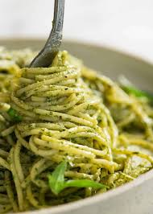

Home
Pesto Pasta

Feast not just your eyes on a delicious recipe for a wonderful bowl of pasta!
- 75g of your favourite type of pasta
- A jar of the cheapest pesto you can find at the supermarket
- 35g of cheese so mature it could be your grandmother
- 2 slices of smokey, smokey bacon
- 90g of some jones barbacue and foot massage chimken
- Boil yo wa'er
- slap dat pasta in
- tell echo to set a timer for 11 minutes
- chop up the bacon and chimken to your desired thackness
- when echo starts shouting, drain the pasta and set it aside
- cook the bacon and chimken in the pan
- throw the pasta back in and add to large teaspoons of pesto
- stir till its all mixed together
- add any seasonings you like, I recommend smoked paprika and black pepper
- plate up and top with cheese
- Enjoy!!